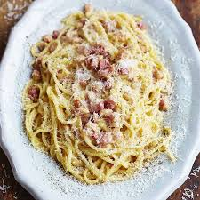

How to cook a delicious Spaghetti Carbonara

Description
Spaghetti Carbonara is a classic Italian pasta dish made with eggs, cheese, pancetta, and pepper. It's creamy, comforting, and quick to prepare, making it a favorite for many.
Ingredients
For the Spaghetti Carbonara:
- 200 grams spaghetti
- 100 grams pancetta, diced
- 2 large eggs
- 50 grams Pecorino Romano cheese, grated
- 50 grams Parmesan cheese, grated
- 2 cloves garlic, minced
- Salt and freshly ground black pepper to taste
- Fresh parsley for garnish (optional)
- Cook the Spaghetti:
- Bring a large pot of salted water to a boil.
- Cook the spaghetti according to package instructions until al dente.
- Reserve 1 cup of pasta water and then drain the spaghetti.
- Prepare the Sauce:
- In a bowl, whisk together the eggs, Pecorino Romano, and Parmesan cheese.
- Season with a pinch of salt and a generous amount of black pepper. Set aside.
- Cook the Pancetta:
- In a large skillet, cook the pancetta over medium heat until crispy, about 5-7 minutes.
- Add the minced garlic and cook for another minute. Remove from heat.
- Combine and Serve:
- Add the cooked spaghetti to the skillet with the pancetta and garlic. Toss to combine.
- Remove the skillet from heat and quickly pour in the egg and cheese mixture, tossing constantly to create a creamy sauce. Add pasta water as needed to reach the desired consistency.
- Serve immediately, garnished with fresh parsley and additional grated cheese if desired.